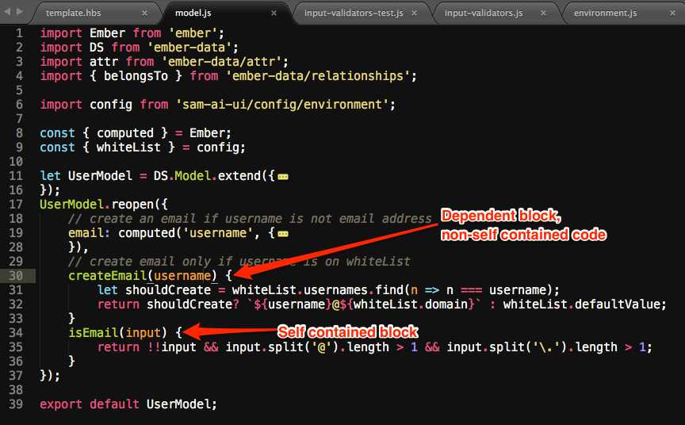
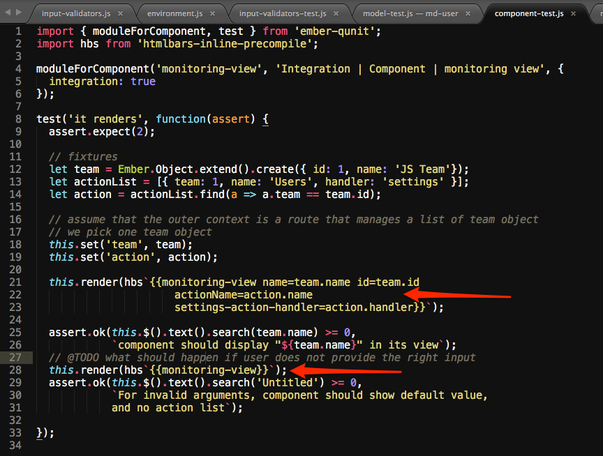

Javascript for the web
Marcellin Nshimiyimana
About the Speaker
- Marcellin Nshimiyimana
- Software Engineer @Fusemachines
- Blog @ Daily
Hackers Learn
By Reading
Making Stuff
Connections
Goal: Help people find connected entities/values in their database.
User provides a value (name, email, title ...) and then the app provides more values that have similar properties.
User provides a value (name, email, title ...) and then the app provides more values that have similar properties.
Definition

Process of finding out whether your program works.
Types of testing
- Unit
- Integration
- Acceptance
Unit Testing
Goal: Make sure that there is always a consistent one-to-one mapping between inputs and outputs of self contained block.
self contained block
An isolated chunk of code
Example of self contained block
The monitoring/md-user model
Unit Test for monitoring/md-user model

Integration Testing
Goal: Make sure that the whole application/system does not fail, when self contained block is added tp this system
Integration Test for monitoring-view component
Acceptance Testing
Goal: Make sure that project's features are functional, and project's goals are met
Acceptance Test for monitoring-view component
LIVE CODING
Refactoring
The hard way => the bad way
Unit Test for monitoring/md-user model